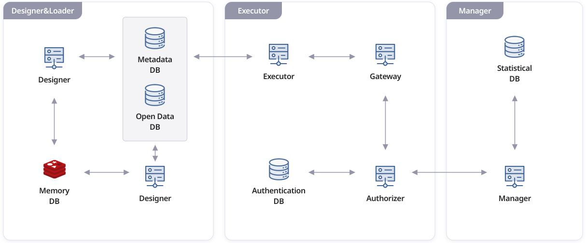

Data Infuser Architecture
API Generation
Designer
Designer is a service that manages raw data and creates APIs. Within the user interface, a user can define API settings such as provision items, API call specifications, user parameters, and API operation methods. If the user requests API specification, the Designer forms an OAS 3.0-based API specification from metadata stored in the metadata DB. The user can also set the loading cycle so that the Loader would automatically update the API. When all the steps are completed, the user can finally deploy API.
Loader
Loader is a service that extracts data from raw data, analyzes data, and stores data. When the user uploads raw data (files or DBMS), the Designer calls the Loader through the memory DB. Then, the Loader extracts data from raw data and analyzes it through the job queue. Next, the Loader defines schemas of the data, creates schema tables, and stores tables in the metadata DB. Furthermore, the Loader can update processed data according to the loading cycle set by the user.
API Service Provider
Gateway
Gateway is a service that reads a user's API request. Gateway contacts the Authorizer to determine if the user is a verified user.
Authorizer
Authorizer is a service that verifies a user's validity by checking the Authentication DB. If the user information and the authentication keys match those in the DB, Authorizer determines the user as a verified user. Authorizer also creates statistical data from this request and stores it in the logs database. Furthermore, Authorizer stores generated or modified authentication key information in Authentication DB.
Executor
Executor is a service that executes the user's request and brings the necessary data. It extracts metadata from the user's request information and queries it in the Metadata DB. Subsequently, Executor uses DB queries to query the API in the Open Data DB. When it finds the necessary information, it delivers the information to the Gateway. Gateway returns the API to the user in a JSON/XML format.
The three services mentioned above come together to form an API service
API Service Management
Manager
Manager is a GUI-based management service that allows the system admin to check the status of generated or deployed APIs. System Admin can administer deployed API's status and logs via Manager. Manager also offers statistical data through multidimensional analysis and statistical queries. As a result, the administrator can visually see the status of the API, traffic changes, and the number of traffic per API.
Others
Databases
Data Infuser has main four databases. Open Data DB stores data that is extracted from raw data and processed by Loader. Authentication DB allows the admin to verify user information and authentication key information when the user attempts to leverage APIs. Metadata DB stores metadata of collected data. Metadata is used for API calls, API specification generation, etc. Statistical DB is separately established so that the user can check the utilization status of APIs and manage APIs efficiently.
Develop Environmet
Gateway
- Golang 1.14.4
- License
GNU GPL
Loader
- nodeJS
v12.16.3 - MySQL 8.0.x
Designer
-Server
- nodeJS
v12.16.3 - MariaDB
v10.1
Desginer
-Client
- nodeJS
v12.16.3 - React v16
Executor
- Golang 1.13.4
- MySQL5.7
- GIN
- GORM
Authorizer
- Golang 1.14.4
- MySQL5.7
- Redis
- Docker